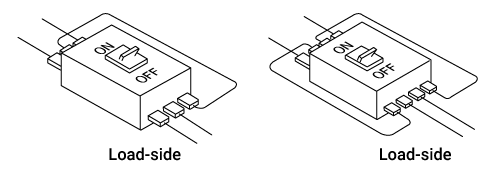

Circuit Breakers for Use in Particular ApplicationsUntuk Tegangan Khusus DC

Daftar Produk
Arus searah lebih sulit diputus daripada arus bolak-balik karena tidak ada titik nol arus, dan produk standar tidak tersedia untuk tegangan tinggi arus searah. Karena alasan ini, gunakan pemutus arus untuk tegangan khusus arus searah.
Produk 4 kutub tersedia untuk 550VDC dan 600VDC. (NF1250-SDW adalah produk 3 kutub.)
| Model | NF63-SV | NF125-SV | NF250-SV | NF400-SW | NF630-SW | NF800-SDW | NF1250-SDW | NF1600-SDW | |||||||||
|---|---|---|---|---|---|---|---|---|---|---|---|---|---|---|---|---|---|
| Rated current (A) | 3 5 10 15 20 30 40 50 60 63 |
15 20 30 40 50 60 75 100 125 |
100 125 150 175 200 225 250 |
250 300 350 400 |
500 600 630 | 700 800 | 1000 1200 1250 | 1600 | |||||||||
| Number of poles | 3 | 4 | 3 | 4 | 3 | 4 | 3 | 4 | 3 | 4 | 3 | 4 | 3 | 3 | 4 | ||
| IEC 60947-2 | Rated voltage (VDC) | 400 | 550 | 440 | 550 | 500 | 600 | 500 | 600 | 500 | 600 | 500 | 600 | 500 | 600 | 500 | 600 |
| Breaking capacity (kA) | 2/2 | 10/10 | 20/20 | 40/40 | 40/40 | 40/40 | 40/20 | 20/20 | 40/20 | ||||||||
| JIS C 8201-2-1 Ann.1 Ann.2 |
Rated voltage (VDC) | 400 | 550 | 440 | 550 | 500 | 600 | 500 | 600 | 500 | 600 | 500 | 600 | 500 | 600 | 500 | 600 |
| Breaking capacity (kA) | 2/2 | 10/10 | 20/20 | 40/40 | 40/40 | 40/40 | 40/20 | 20/20 | 40/20 | ||||||||
| Overcurrent tripping method | Thermal-electromagnetic | With instantaneous tripping operation only (Mag Only) |
|||||||||||||||
| Operating characteristics | Same as standard DC products | Same as standard AC products | Same as standard products | Instantaneous trip characteristic only * | |||||||||||||
| Reverse connection | Available | － | |||||||||||||||
* Sama seperti Mag Only
- Catatan:
- *1Konstanta waktu sirkuit harus 10 ms atau kurang. (5 ms atau kurang untuk rangka 125 A atau di bawahnya)
- *2Tanda CE dan UKCA ditunjukkan sebagai standar.
- *3Kapasitas pemutusan dalam ditunjukkan pada pemutus sirkuit.
- *4Blok terminal kabel timah vertikal (SQLT) tidak berlaku.
Kabel selain yang ditunjukkan dalam diagram tidak dapat digunakan karena karakteristik trip akan berubah.

Pengkabelan untuk tegangan khusus DC